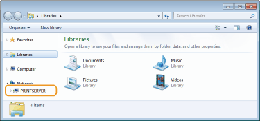
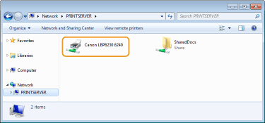
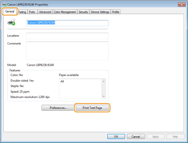
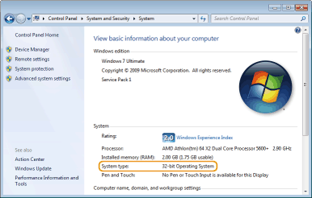
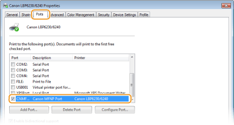
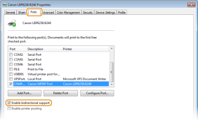
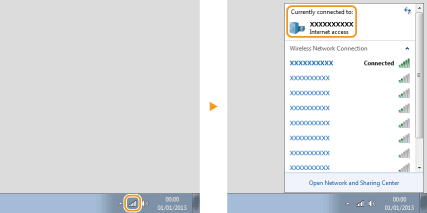

[Start]
Basic Windows Operations
Displaying [Computer] or [My Computer]
Windows XP/Server 2003
[Start] select [My Computer].
select [My Computer].
[Start]
Windows Vista/7/Server 2008
[Start] select [Computer].
[Start]
Windows 8/Server 2012
Right-click the lower-left corner of the screen select [File Explorer] [Computer] or [This PC].
Right-click the lower-left corner of the screen
Displaying the Printer Folder
Windows XP Professional/Server 2003
[Start] select [Printers and Faxes].
[Start]
Windows XP Home Edition
[Start] select [Control Panel] [Printers and Other Hardware] [Printers and Faxes].
[Start]
Windows Vista
[Start] select [Control Panel] [Printer].
[Start]
Windows 7/Server 2008 R2
[Start] select [Devices and Printers].
[Start]
Windows 8/Server 2012
Right-click the lower-left corner of the screen select [Control Panel] [View devices and printers].
Right-click the lower-left corner of the screen
Windows Server 2008
[Start] select [Control Panel] double-click [Printers].
[Start]
Enabling [Network discovery]
If you are using Windows Vista/7/8/Server 2008/Server 2012, enable [Network discovery] to view the computers on your network.
Windows Vista
[Start] select [Control Panel] [View network status and tasks] under [Network discovery], select [Turn on network discovery].
[Start]
Windows 7/Server 2008 R2
[Start] select [Control Panel] [View network status and tasks] [Change advanced sharing settings] under [Network discovery], select [Turn on network discovery].
[Start]
Windows 8/Server 2012
Right-click the lower-left corner of the screen select [Control Panel] [View network status and tasks] [Change advanced sharing settings] under [Network discovery], select [Turn on network discovery].
Right-click the lower-left corner of the screen
Windows Server 2008
[Start] select [Control Panel] double-click [Network and Sharing Center] under [Network discovery], select [Turn on network discovery].
[Start]
Displaying Shared Printers in the Print Server
1
Open [Windows Explorer] or [File Explorer].
Windows XP/Vista/7/Server 2003/Server 2008
[Start] select [All Programs] or [Programs] [Accessories] [Windows Explorer].
[Start]
Windows 8/Server 2012
Right-click the lower-left corner of the screen select [File Explorer].
Right-click the lower-left corner of the screen
2
Select a print server from [Network] or [My Network Places].
To check a computer on the network, you may need to enable [Network discovery] (Enabling [Network discovery]) or search for the computer on the network.

 |
The shared printers are displayed.
 |
Displaying the [CD-ROM/DVD-ROM Setup] Screen
If your computer does not display the [CD-ROM/DVD-ROM Setup] screen after you insert the CD-ROM/DVD-ROM, follow the procedure below. This following example uses "D:" as the name of the CD-ROM/DVD-ROM drive. The CD-ROM/DVD-ROM drive name may be different on your computer.
Windows XP/Server 2003
[Start] select [Run] enter "D:\MInst.exe" click [OK].
[Start]
Windows Vista/7/Server 2008
[Start] enter "D:\MInst.exe" in [Search programs and files] or [Start Search] press the [ENTER] key on the keyboard.
[Start]
Windows 8/Server 2012
Right-click the lower-left corner of the screen select [Run] enter "D:\MInst.exe" click [OK].
Right-click the lower-left corner of the screen
Printing a Test Page in Windows
You can check whether the printer driver is operational by printing a test page in Windows.
1
Load Letter size paper in the multi-purpose tray or manual feed slot.
Loading Paper in the Multi-Purpose Tray
Loading Paper in the Manual Feed Slot
Loading Paper in the Multi-Purpose Tray
Loading Paper in the Manual Feed Slot
2
Display the printer folder. Displaying the Printer Folder
3
Right-click the icon of the machine and click [Printer properties] or [Properties].

4
In the [General] tab, click [Print Test Page].

|
|
Windows prints the test page.
|
Checking the Bit Architecture
If you are not sure whether your computer is running 32-bit or 64-bit Windows, follow the procedure below to check.
1
Display [Control Panel].
Windows Vista/7/Server 2008
[Start] select [Control Panel].
[Start]
Windows 8/Server 2012
Right-click the lower-left corner of the screen select [Control Panel].
Right-click the lower-left corner of the screen
2
Display [System].
Windows Vista/7/8/Server 2008 R2/Server 2012
Click [System and Security] or [System and Maintenance] [System].
Click [System and Security] or [System and Maintenance]
Windows Server 2008
Double-click [System].
Double-click [System].
3
Check the bit architecture.
32-bit operating systems
[32-bit Operating System] is displayed.
[32-bit Operating System] is displayed.
64-bit operating systems
[64-bit Operating System] is displayed.
[64-bit Operating System] is displayed.

Checking the Printer Port
1
Display the printer folder. Displaying the Printer Folder
2
Right-click the icon of the machine and click [Printer properties] or [Properties].
3
In the [Ports] tab, check that the port is selected correctly.

 |
If you are using a network connection and have changed the machine's IP addressIf the [Description] of the selected port is [Canon MFNP Port], and the machine and the computer are on the same subnet, then the connection will be maintained. You do not need to add a new port. If it is [Standard TCP/IP Port], you need to add a new port. Configuring Printer Ports
|
Checking Bidirectional Communication
1
Display the printer folder. Displaying the Printer Folder
2
Right-click the icon of the machine and click [Printer properties] or [Properties].
3
In the [Ports] tab, check that the [Enable bidirectional support] check box is selected.

Checking the SSID to Which Your Computer Is Connected
If your computer is connected to a wireless LAN network, click  , or in the system tray to display the SSID of the connected wireless LAN router.
, or in the system tray to display the SSID of the connected wireless LAN router.
, or in the system tray to display the SSID of the connected wireless LAN router. 